Writing an experiment definition
The purpose of this script is to introduce Signals and guide the reader towards programming in a less procedural way. After reading this you should will be able to create the experiments you want in Signals, using the Signals Experiment Framework. The guide may appear slow at first but sticking with it will greatly reduce the number of errors you will encounter while making your first experiment.
Contents
- Introduction
- What are signals?
- Relationships between signals
- Mathematical expressions
- Example 1: cos(x * pi)
- Example 2: x -> degrees
- Logical operations
- mod, floor, ceil
- Arrays
- Matrix arithmatic
- Complicated expressions
- Example 1: Upper bound
- Example 2: Gabor
- A note about Signals variables
- Signals only update when all their inputs have have values
- Conditional statements
- iff
- cond
- Indexing
- Indexing into a Signal
- Indexing with a Signal
- selectFrom
- indexOfFirst
- map
- Anonymous functions
- Example 2: a complex counter
- Sampling with map
- at
- then
- Mapping constants
- keepWhen
- skipRepeats
- A signal that updates only once
- A note about syntax
- mapn
- map2
- scan
- The seed value may be a signal
- Growing an array with scan
- Example: finding the max with scan
- Introducing extra parameters
- Parameters may be Signals
- When pars take new values, accumulator function is not called!
- Plot output
- Command output
- Scan can call any number of functions at the same time
- delta
- lag
- buffer
- bufferUpTo
- to
- setTrigger
- sig.quiescenceWatch
- merge
- delay
- Notes
- Summary
- Bonus plot 1
- Butterfly curve (transcendental plane curve)
- Etc.
Introduction
The live script that accompanies this document can be found in signals/docs/turorials/using_signals.m. This script allows you to run the blocks of code shown here and plot the values of signals live. To run a block of code, click on the section of interest and press Ctrl + Enter.
For the purposes of demonstration we can create signals using the sig.test.create function, however in you expDef you can only create new signals based on the function's inputs. More on this later.
function expDefFn(t, events, parameters, vs, inputs, outputs, audio)
Example expDefs can be found in signals/docs/examples.
The bracketed numbers throughout this script correspond to notes at the bottom of the file. The notes provide extra details about Signals. Please report any errors as GitHub issues. Thanks!
What are signals?
When writing an experiment definition (expDef), it's useful to think of signals as nodes in a network, where each node holds a value that is the result of passing its inputs through a function. This network is 'reactive' in that whenever a node's input values change, the node recalculates its own value. In this way changes propergate through the network asynchronously.
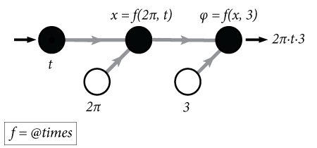
The above node graph would be the result of writing the following:
t = sig.test.create; % returns a signal phi = 2*pi*3*t; % a new signal, phi, that defines phase over time, t
Imagine the signal t was a clock signal whose value was a timestamp that constantly updated. The signal phi then updates it's value every time t updates. In this way you can express relationships between variables in an easy to read, mathematical way. One of these variables happens to be time, which means you can define how variables change over time. In the above example we have defined a temporal fequency in Hz (the value of t in your expDef is in seconds from experiment start). This can then be applied to a visual stimulus property, as shown in the example expDef driftingGrating.m.
Relationships between signals
Let's start to build a reactive network. Most of MATLAB's elementary operators work with signals in the way you would expect, as demonstrated below. You may type ctrl + enter to run this entire secion at once...
x = sig.test.sequence(-50:1:50, 0.05); % Create a sequence a = 5; b = 2; c = 8; % Some constants to use in our equation y = a*x^2 + b*x + c; % Define a quadratic relationship between x and y % Let's call a little function that will show the relationship between our % two signals. The plot updates each time the two input Signals update: ax = sig.test.plot(x,y,'b-'); xlim(ax, [-50 50]);

Mathematical expressions
Signals allows a good degree of clarity in defining methematical equations, particularly those where time is a direct or indirect variable
Example 1: cos(x * pi)
x = sig.test.sequence(0:0.1:10, 0.05); % Create a sequence y = cos(x * pi); sig.test.timeplot(x, y, 'mode', [0 2]); % Plot each variable against time

Example 2: x -> degrees
Let's imagine you needed a Signal that showed the angle of its input between 0 and 360 degrees:
x = sig.test.sequence(1:4:1080, 0.005); % Create a sequence y = iff(x > 360, x - 360*floor(x/360), x); % More about conditionals later sig.test.plot(x, y, 'b-'); xlim([0 1080]); ylim([0 360])

Logical operations
Note that the short circuit operators && and are not implemented in Signals, always use & and | instead.
x = sig.test.sequence(1:15, 0.2); % Create a sequence bool = x >= 5 & x < 10; ax = sig.test.plot(x, bool, 'bx'); xlim(ax, [0 15]), ylim(ax, [-1 2])

mod, floor, ceil
A simple example of using mod and floor natively with Signals:
x = sig.test.sequence(1:15, 0.2); % Create a sequence even = mod(floor(x), 2) == 0; odd = ~even; sig.test.timeplot(x, even, odd, 'tWin', 1);

Arrays
You can create numerical arrays and matricies with Signals in an intuitive way. NB : Whenever you perform an operation on one or more Signal objects, always expect a new Signal object to be returned. In the below example we create a 1x3 vector Signal, X, which is not an array of Signals but rather a Signal that represents a numrical array.
x = sig.test.sequence(1:5, 0.5); % Create a sequence X = [x 2*x 3]; % Create an array from signal x X_sz = size(X); % Reports the size of object's underlying value
NB: Cell array syntax is not supported in Signals, that is the following won't produce a signal:
X = {x x};
class(X)
ans =
'cell'
Although Signals can technically hold cell arrays as their values, it's best to avoid using them in your experiments.
Matrix arithmatic
Xt = X'; % X transpose
Y = Xt.^3 ./ 2;
Complicated expressions
Below are some examples of more complex mathematical expressions that can be defined in Signals.
Example 1: Upper bound
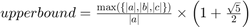
[a, b, c] = sig.test.create('names', {'a','b','c'}); upperBound = max([abs(a), abs(b), abs(c)]) / abs(a) * (1 + sqrt(5))/2; disp(upperBound.Name)
max([|a| |b| |c|])/|a|*3.2361/2
Example 2: Gabor
Let's reproduce the equation for generating a Gabor patch, i.e convolving a sinusoid with a 2D Gaussian function:
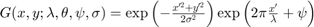
Where:

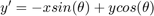
% Create some input signals for this demonstration. xx and yy are vectors % of the x and y coordinates of the Gabor, where (0,0) is the centre of the % Gabor patch [xx, yy, theta, sigma, lambda, phi] = sig.test.create(); % Create a 2-D grid coordinates based on the coordinates contained in % vectors xx and yy [X, Y] = xx.mapn(yy, @meshgrid); % Calculate the rotated x and y coordinates for the Gabor filter. The % rotated coordinates allow us to define an elliptical window rotated by % theta(1) Xe = X.*cos(theta(1)) + Y.*sin(theta(1)); Ye = Y.*cos(theta(1)) - X.*sin(theta(1)); % And the rotated coordinates for the grating Xc = X.*cos(theta(2) - pi/2) + Y.*sin(theta(2) - pi/2); % Define our Gaussian function gauss = exp(-Xe.^2./(2*sigma(1)^2) + -Ye.^2./(2*sigma(2)^2)); % The grating function scaled by the wavelegth and translated by the phase grate = cos( 2*pi*Xc./lambda + phi ); G = gauss.*grate; % Convolve the two functions
Every signal has a Name property that you can print or set. This is useful for plotting and visualizing signals. Below we rename some of our signals to Greek letters then print our Gabor signal name:
% Rename a few of our signals for display purposes theta.Name = char(hex2dec('03bb')); % Orientation sigma.Name = char(hex2dec('03B8')); % Standard deviation of Gaussian envelope lambda.Name = char(hex2dec('03C3'));% Wavelength phi.Name = char(hex2dec('03C6')); % Phase offset Xe.Name = 'x'''; Ye.Name = 'y'''; % Rename to X' and Y' X.Name = 'x'; Y.Name = 'y'; % Rename to x and y % And print their names to the command window fprintf([... 'Gaussian equation: %s\n',... 'Grating equation: %s\n',... 'Convolved: %s\n'],... gauss.Name, grate.Name, G.Name)
Gaussian equation: exp((-x'.^2./2*θ(1)^2 + -y'.^2./2*θ(2)^2)) Grating equation: cos((6.2832*(x.*cos((λ(2) - 1.5708)) + y.*sin((λ(2) - 1.5708)))./σ + φ)) Convolved: exp((-x'.^2./2*θ(1)^2 + -y'.^2./2*θ(2)^2)).*cos((6.2832*(x.*cos((λ(2) - 1.5708)) + y.*sin((λ(2) - 1.5708)))./σ + φ))
The above code is simply a demonstration of how to express relationships mathematically in Signals. In the next tutorial we will look at creating stimuli in Signals. Spoiler: there's a function that creates a Gabor for you.
To live-plot a couple of interesting mathematical functions using Signals, see the end of this guide.
A note about Signals variables
Signals are objects that constantly update their values each time the Signals they depend on update. When you do an operation on a signal (e.g. x * 2) a new Signal object is created. This can be assigned to a variable (e.g. y = x * 2, however clearing or overwriting that variable does not affect the underlying Signal. The original object stays around until its inputs or the network are deleted. This is important to think about when writing expDefs. Think of variables as temporary labels for each object which can be moved around at any time without affecting the object they label. Consider the following:
% Create a new input signal and assign it to the variable 'a' a = sig.test.create(); % Derive a new signal from 'a' and assign it to the variable 'b' b = abs(a); % Reassign a value to 'a', e.g. a string. Think of this as taking a % sticker that says 'a' off the Signal object and placing it on a string % instead: a = "hello"; % assign "hello" to variable 'a'. % Note that this doesn't affect the Signal object originally assigned to % 'a', but now if you do something to 'a', you're not working with a Signal % anymore, but rather a char array: b = abs(a)
Undefined function 'abs' for input arguments of type 'string'.
This may seem obvious but important to note as this can be unclear to people not used to this way of programming.
Likewise if you re-define a Signal, any previous Signals will continue using the old values and any future Signals will use the new values, regardless of whether the variable name is the same. Remember that variable names are simply object handles so clearing or reassigning those variable names doesn't necessarily change the underlying object:
% Let's start with a blank slate clear variables % Create a new input signal, x, and assign it to the variable 'a' a = sig.test.create('names', "x"); b = a^2; % Derive a signal ('a^2') and assign it to variable 'b' c = b + 2; % Derive a new signal ('a^2 + 2') and assign it to variable 'c' b = a*3; % A new Signal object ('a*3') is assigned to the variable 'b' d = b + 2; % A new Signal object ('a*3 + 2') is assigned to the variable 'd'
The key here is that d has the value a*3 + 2 and not a^2 + 2, even though the variable b was at one point a^2. Counting each mathematical value in the above code block (i.e. mathematical variables and constants), how many nodes are in our network? The answer is 9 (see note 2).

Variables are like labels, if you reassign them they are no longer pointing to the same object.
Looking at the name of your Signals may help you better understand what they are
y = abs(a); disp(['y = ' y.Name]) y = y^2; disp(['y = ' y.Name]) z = [y y]; disp(['z = ' z.Name])
y = |a| y = |a|^2 z = [|a|^2 |a|^2]
It's fine to break long lines into multiple shorter lines by re-assigning to the same variable:
b = a * 2 * pi; b = abs(b); disp(b.Name)
b = |a*2*3.1416|
Signals only update when all their inputs have have values
As you may have noticed, signals can be derived from any number of other signals, as well as by constants(3). Mathematically, Signals can be viewed as variables which, any time they take a new value, cause any dependent equations to be re-evaluated.
This leads us to one of the most important things to consider when writing an expDef: Signals can only update if all (or enough) of their inputs have values.
At the beginning of an Experiment your expDef function is called and all your signals are wired up. Until the experiment starts however, none of these signals have any value. Each signal can only update its value when its inputs have updates and the time that this happens depends on how you wire your network.
In the below example we have signals x, a, b, and c. From these, we derive a new signal and assign it to 'y'. If x updates, y won't because the expression is still incomplete, we don't have values for a, b, or c. Likewise if b updates, y will remain unchanged and any signals derived from y will likewise not update. The signal y can only have a value once all the input signals have a value. When all inputs have values, a change to any of the inputs will cause y to be revaluated using the most recent value of all the inputs.
% Here we create four signals that each update in staggered fashion: x = sig.test.sequence(1:5, 1, 'delay', 1); % Update once per second after a second a = sig.test.sequence(1, 1, 'name', 'a', 'delay', 2); % Update after 2 seconds b = sig.test.sequence(1, 1, 'name', 'b', 'delay', 3); % Update after 3 seconds c = sig.test.sequence(1, 1, 'name', 'c', 'delay', 4); % Update after 4 seconds y = a*x^2 + b*x + c; sig.test.timeplot(x, a, b, c, y);

As you can see from the above plot, the signal 'y' does not update until all its input signals have values. Once all of its inputs have a value whenever any of them updates a new value is calculated using the most recent values of each input.
Conditional statements
iff
Above we saw how logical operations work with Signals. These can also be used in conditional statements that alter the value or operation on a given Signal. Using an if/else statement won't work in your expDef. To construct something similar to an if/else statement, we can use the iff method:
% Create a signal whose values go from 1 - 200 x = sig.test.sequence(1:2:200, 0.05); % if x is greater than 100, y = 100, otherwise y = x y = iff(x > 100, 100, x); % Plot the results ax = sig.test.plot(x, y, 'k-'); ax.XLim = [0 200]; ax.YLim = [0 200];

Note that with iff any and all values can be signals.
cond
In order to construct if/elseif statements we use the cond method, where the input arguments are predicate-value pairs, for example:
y = cond( ... x < 5, a, ... % If x < 5, y = a x > 10, b); % elseif x > 10, y = b
As with all Signals, the condition statement is re-evaluated when any of its inputs update. Any input may be a Signal or otherwise, and if no predicate evaluates as true then the resulting Signal does not update.
Likewise, the condition statement will terminate if any of the source Signals of a particular pred-value pair do not yet have values. Also, in the same way as a traditional if-elseif statement, each predicate is only evaluated so long as the previous one was false. For this reason, the order of pred-value pairs is particularly important. Below we use true as the last predicate to ensure that the resulting Signal always has a value.
y = cond(... x > 0 & x < 5, a, ... % if x between 0 and 5, y = a x > 5, b, ... % elseif x is greater than 5, y = b true, c); % else y = c
Indexing
Indexing into a Signal
Signals can be indexed as expected with brackets and the colon operator.
A = sig.test.create; a = A(2); % index second element of A B = A(5:end); % index elements 5 to array end
Indexing with a Signal
Another Signal may be used to index another Signal. In the below example we derive a signal indexes the value of A with the value of i. The resulting signal will update whenever i or A update, so long as both of them have a value.
i = sig.test.create; % Define a new Signal
a = A(i);
If the value of A has a length less than the value of i, an 'index out of bounds' error will be thrown, just like with normal arrays. One solution to this would be to use a conditional signal like the one in the previous section to deal with such cases:
i = iff(i > numel(A), numel(A), i); a = A(i);
selectFrom
The selectFrom method allows for indexing from a list of Signals whose values may be of different types. In some ways this is comparable to indexing into a cell array:
y = i.selectFrom(A, B, C); % when i == 1, y = A, etc.
NB: When the index is out of bounds the Signal simply doesn't update. This could also be used to e.g. map a choice signal to a bunch of outcome signals.
indexOfFirst
The indexOfFirst method returns a Signal with the index of the first true predicate in a list of Signals. This has a similar functionality to find(arr, 1, 'first'):
idx = indexOfFirst(A > 5, B < 1, C == 5); % Better examples welcome!
NB If not all input signals have values, or none of them are true (i.e. non-zero) then the value idx will equal the number of inputs + 1. This is a rare exception to the rule that signals don't update unless all their inputs have a values. The below example will produce a signal that will only update with a valid index:
idx = indexOfFirst(x, y, z);
% Keep when value is less than or equal to number of inputs (i.e. 3)
idx = idx.keepWhen(idx < 4);
map
Not all MATLAB functions work natively with Signals. For example, the function ischar does not play nicely with Signal objects:
A = sig.test.create; % Create an new signal B = ischar(A); class(B) % Note that B is not a Signal object but a boolean.
In the above example, MATLAB is testing the object itself, rather than the value of A (see note 4). For this reason B isn't a Signal object and will never be true, even is the value of signal A is a char. The solution to this problem is to use the map method.
map creates a new signal that calls an arbitraty function with the value of its input. This new signal's value is the output of the function you give it.
B = A.map(@ischar);
class(B) % Returns a Signal object
In the above example whenever signal A updates with a new value, its value is passed (or 'mapped') to the function ischar and the output (a boolean) becomes the value of signal B. This means that B will update its value whenever A updates. As usual, while A doesn't have a value, ischar is never called.
The @ symbol is MATLAB's syntax for a function handle. Instead of calling the function, you simply point to the function as if it is a variable. For more information, see the MATLAB documentation on creating function handles.
In the below example we create a signal that can checks whether its input is a char and if so, converts it to a number:
B = iff(A.map(@ischar), str2num(A), A);
Why use can we write str2num(A) and not ischar(A)? You can see which methods work natively with Signals by looking at the following list:
methods('sig.Signal') % All methods of the class sig.Signal
Methods for class sig.Signal:
Signal buffer delta floor keepWhen map2 mod onValue rot90 sin times abs bufferUpTo eq ge lag mapn mpower or round skipRepeats to all colon erf gt le max mrdivide output scan sqrt transpose and cond exp horzcat log merge mtimes plus selectFrom str2num uminus any cos fliplr identity lt min ne power setTrigger strcmp vertcat at delay flipud indexOfFirst map minus not rdivide sign sum
Methods of sig.Signal inherited from handle.
As you can see str2num is in the list but ischar is not. If in doubt, map will always work, it just looks a little uglier:
B = iff(A.map(@ischar), A.map(@str2num), A);
Another important thing to note is that operators like '==' and '*' are just convenient ways of calling normal functions (5). They actually correspond to the functions eq and times. Most of the time you can use either form but on occasion it's clearer to use one over the other.
B = iff(A.map(@ischar), strcmp(A, '10'), A == 10) B = iff(A.map(@ischar), strcmp(A, '10'), eq(A, 10)) % These are equivalent
The functions you call using map can be any function include your own non-builtin functions (although they need to be on the MATLAB search path). You can also define local functions in your expDef and map values with those. The functions used by map don't need to deal with Signal objects as they only get called with a signal's value.
What if your function expects single but your input signal's value is a double? Simply typecast it with map!
B = A.map(@single).map(@myfunc);
The value of A is called on single and its output is then called on myfunc. You'll notice that many Signals methods can be chained in this way, which is convient for writing one-liners. If your line becomes too long or difficult to read you can also split it across a number of lines:
B = A.map(@single); B = B.map(@myfunc);
Anonymous functions
Sometimes your Signal must be in a different positional argument. For this we simply create an anonymous function and use that. See the MATLAB doumentation for more information on how to use these.
delta = A.map(@(A) diff(A,1,2)); % Take 1st order difference over 2nd dimension a = A.map(@(A) sum(A,2)); % Take sum over 2nd dimension
You may have noticed that our other example can be written using an anonymous function as a wrapper so that map is called just once:
B = A.map(@(v) myfunc(single(v)));
Any of these variants will work just fine and there is no real atvantage to which one you choose, however if you need to access the intemediate value (i.e. single(v), it is better to use the former example.
Example 2: a complex counter
In the following example we have a signal, responseType, that may be an element of [-1 0 1]. A response type of 0 means the trial timed out before the subject gave a response. Let's say we want to count the number of times in a row a trial timeout occurs:
% First we store the responseType values for up to the last 1000 trials timeOuts = responseType.bufferUpTo(1000); % Then count the number of recent timeouts that occured in a row using an % anonymous function that works on this array with find and sum: timeOutCount = timeOuts.map(@(x) sum(x(find([1 x~=0],1,'last'):end) == 0));
Sampling with map
Map is particularly handy for 'sampling' functions, that is, for generating a new index, value, or whatever, each time an event occurs. Below we derive a signal, 'side', that each time 'newTrial' updates takes a new value from [-1 1]. Note that the anonymous function discards the value of 'newTrial'. We're only using it as a way to trigger the evaluation of this function.
newTrial = sig.test.create; side = newTrial.map(@(~) sign(rand-0.5));
at
The method at will sample the value of a Signal each time another Signal updates. What's more, the Signal that updates must evaluate to true:
x = sig.test.sequence(1:1:100, 0.15); % An linear function y = sig.test.sequence(sin(1:.1:20), 0.1, 'name', 'y'); % A sine wave z = x.at(y > .5); % sample the values of x when the values of y > 0.5 sig.test.timeplot(x, y, z, 'mode', [2,2,1], 'tWin', 20); % plot over 20 secs
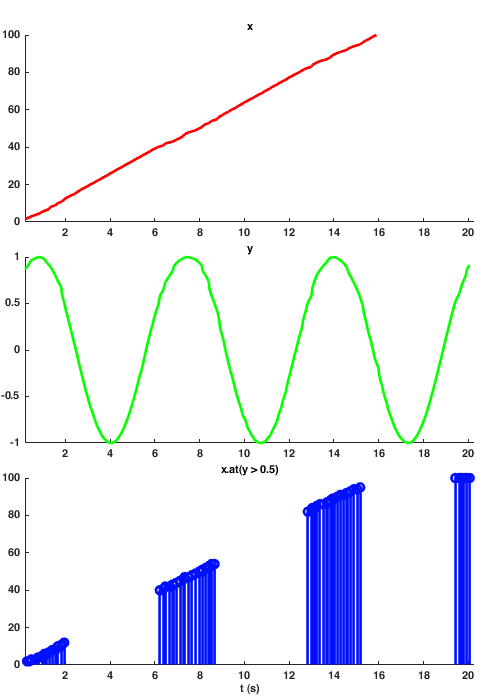
It's very important to remember that the new signal will only update when the second input updates and is true (so long as the first input has a value to sample). For the value to be true, it must not be equal to 0. In other words, y = x.at(updatedAndNonZero). As you can see 'z' keeps updating each time 'y' updates, even when 'x' stops updating (c.f. keepWhen method below).
then
There is another method called then which works the same way as at, but with the inputs in a reverse order. This is simply to make things more self-documenting.
updatedAndTrue = y.at(updated);
updatedAndTrue = updated.then(y); % These two lines are equivalent
Mapping constants
Sometimes you want to derive a Signal whose value is always constant but nevertheless updates depending on another Signal, thus acting as a trigger for something. This can be achieved by using a constant value instead of a function in map. For example below we produce a signal that is always mapped to true and updates whenever its dependent value updates.
seq = repmat(-2:2, 1, 5); x = sig.test.sequence(seq, 0.2); % Create a sequence y = x.at(x); % Zero values are ignored updated = x.map(true); % Updates to true each time x updates z = x.at(updated); % All values map to true ax = sig.test.timeplot(x, y, z, 'mode', [0,1,1]);
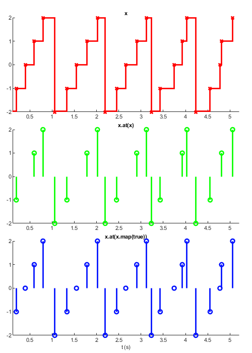
The above example is simply to demonstrate that you can map a value to 'true' when we care about the 'when' of a signal than the 'what'. In the above code x and z do the same thing, but would be useful when you want to sampling one signal each time differnt signal updates, e.g.
updated = y.map(true); z = x.at(updated);
Note that if the input arg is a value rather than a function handle, it is truely constant, even if it's the output of a function:
c = x.map(rand); % use constant value of rand each times x updates rnd = x.map(@(~)rand); % call rand each time x updates
The tilda here means that the value of Signal x is ignored, instead of being assigned to a temporary variable or being mapped into the functon rand, thus rand is called with no arguments.
keepWhen
Another method for filtering signals is keepWhen. This will keep the value of one signal so long as another signal evaluates true (i.e. is non-zero).
x = sig.test.sequence(1:15, 0.25); % Create a sequence isEven = mod(floor(x), 2) == 0; % True when x is an even number y = x.keepWhen(isEven); % Sample x when x is even ax = sig.test.timeplot(x, y, 'mode', 1);
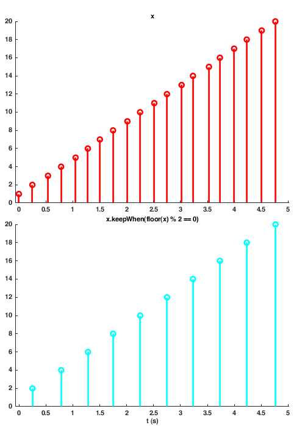
What's the difference between keepWhen and at / then? These two methods essentially do that same thing, however the result of keepWhen will update each time its first input updates, so long as its second input is non-zero.
x = sig.test.sequence(1:1:100, 0.25); % A linear function updating every 1/4 second y = sig.test.sequence(sin(1:.1:20), 0.1, 'name', 'y'); % A sine wave updating every 100ms % z = x.at(y > .5); % z stops when y stops updating z = x.keepWhen(y > .5); % z stops when x stops updating sig.test.timeplot(x, y, z, 'mode', [2,2,1], 'tWin', 20);
Try playing with the update times and using at vs keepWhen
skipRepeats
skipRepeats creates a signal that only updates when its input updates with an unique value. That is, when its input updates with a value that is different to the previous one. It is important to realize that signals can repeatedly update with the same value, and each time a signal updates it can cause other signals to update depending on how you define them. Below is an example of skipRepeats:
seq = [0 0 2 2 0 0 -2 -2 0 0 0]; x = sig.test.sequence(seq, 0.45); y = skipRepeats(x); sig.test.timeplot(x, y);

A signal that updates only once
In this next example we show how to define a signal that updates once and only once. Remember that signals generally update whenever any of their inputs update. Sometimes you want to use a value such as a user defined parameter to calculate something, but you don't want it to change at all.
x = sig.test.sequence(0:9, 0.5);
y = x.map(true).skipRepeats.then(x);
sig.test.timeplot(x, y, 'mode', 1);
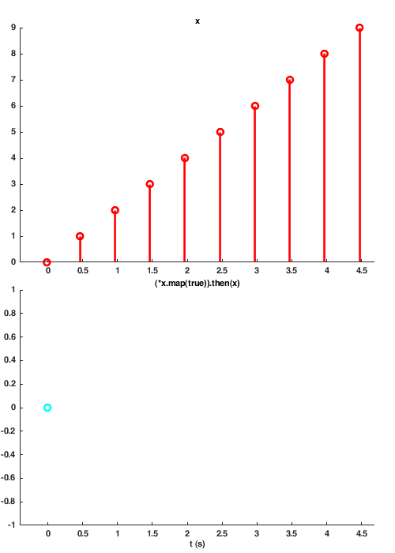
Here is a similar example: update once and only once, when x is zero
x = sig.test.sequence(-4:4, 0.5);
y = x.keepWhen(x == 0).skipRepeats;
sig.test.timeplot(x, y, 'mode', 1);
A note about syntax
When we type something like A.map(pi) we are actually calling the method map on the object A. A method is another word for a function associated with an object. Signals are objects, and so far we've looked at various methods (i.e. functions) that work with them. In MATLAB there are two ways of calling a method on an object, one is the traditional way e.g. func(obj) and the other is the 'dot syntax' way: obj.func(). These are the same, and you can use them interchangeably so long as 'obj' is a Signal (and not something else, like a double or logical). Below are pairs of lines that are equivalent:
S = sig.test.create; % create a Signal object S = S.map(pi); % Map values of S -> pi, e.g. when S updates, return pi S = map(S, pi); S = S.then(true); % When S updates and is true, return true S = then(S, true);
mapn
mapn takes any number of inputs where the last argument is the function that the other arguments are mapped to. The arguments may be any combination of signals and normal data types. It's important to note that the below 'dot notation' only works if the first input is a Signal, otherwise you must use the traditional syntax e.g. mapn(5, A, @f)
B = A.mapn(n, 1, @repmat); % repmat(A,n,1)
NB: map will only assign the first output argument of the function to the resulting Signal. Mapping to a variable number of output Signals is only possible with mapn:
a = sig.test.create; % if a = rand(1,1,3,1,2) [b, n] = a.mapn(@shiftdim); % b is 3-by-1-by-2 and n is 2. c = b.mapn(-n, @shiftdim); % c == a. d = a.mapn(3, @shiftdim); % d is 1-by-2-by-1-by-1-by-3.
map2
If you have exactly two inputs to a function you can also used map2. This method behaves identically to mapn but can apply a function to only two inputs. Also map2 cannot create more than one resulting signal.
% Load an image from a directory of images with the name pattern imgN.mat: imgArr = imgIdx.map2(imgDir, ... @(num,dir)loadVar(fullfile(dir, ['img', num2str(num), '.mat']), 'img'));
scan
scan is a very powerful method that allows one to map a signal's current value and its previous value through a function. This allows one to define signals that have some sort of history to them. This is similar to the fold or reduce functions found in other functional programming applications.
Below we take the value of x and return a value that is the accumulation of x by using scan with the function plus. The third argument to scan here is the initial, or 'seed', value. Because the seed is zero, the first time x takes a value, scan maps zero and the value of x respectively to the plus function and assigns the output to Signal y. The second time x updates, scan maps the current value of y, our accumulated value, and the new value of x to the plus function.
x = sig.test.sequence(ones(1:10), 0.5);
y = x.scan(@plus, 0); % plus(y, x), or y + x
sig.test.timeplot(x, y);
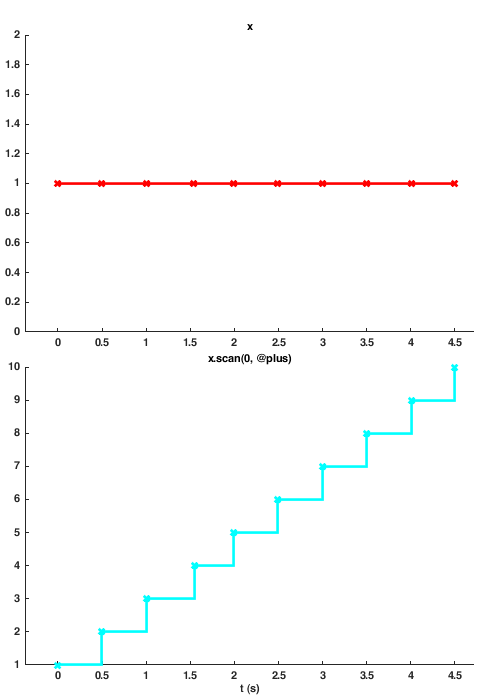
The seed value may be a signal
As with other Signals methods, any of the inputs except the function handle may be a Signal. This is particularly useful as the seed value can act as a reset of the accumulator as demonstrated below.
x = sig.test.sequence(1:10, 0.5); seed = sig.test.sequence([0 0], 2.5, 'name', 'seed'); y = x.scan(@plus, seed); sig.test.timeplot(x, y, seed, 'mode', [0 0 1]);
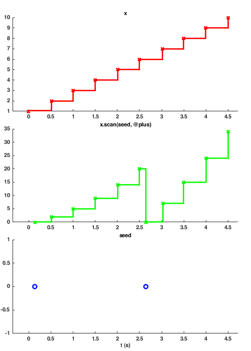
Growing an array with scan
You can grow arrays with scan by using the vertcat or horzcat functions. The accumulated/seed value is always the first argument to the function, however, you can of course assign them to temporary variables beforehand as below.
x = sig.test.sequence('olleh', 1); f = @(acc,itm) [itm acc]; % Prepend char to array y = x.scan(f, '!'); sig.test.timeplot(x, y); % Plot values h = output(y); % Post value to command prompt
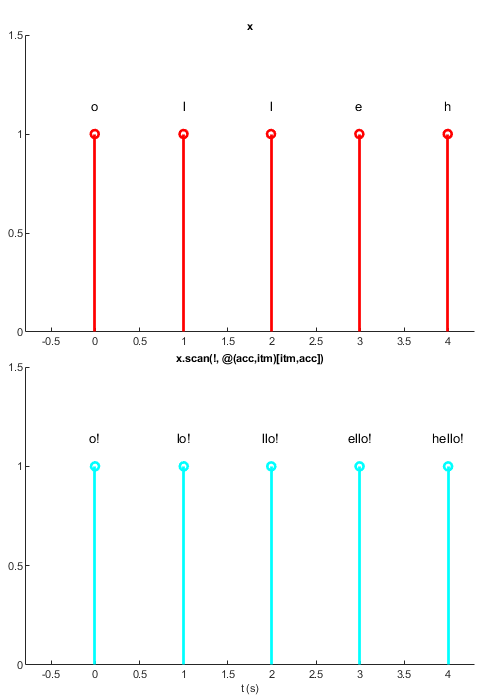
Below, each time the Signal 'correct' takes a new, truthy value, the Signal 'trialSide' updates and scan will call the function horzcat with the values of hist and trialSide like so: horzcat(hist, trialSide), which is syntactically equivalent to [hist trialSide] hist = trialSide.at(correct).scan(@horzcat);
Example: finding the max with scan
In this example we use scan to find the maximum value in a signal's history. The logic is simple: each time signal 'x' updates we compare our previous max value with the new one and save whichever is bigger.
Let x be an amplitude modulated signal defined as:
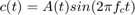
f_c = 8; % Carrier frequency in Hz t = 0:1/1000:0.5; % Determine time values at 1000 Hz sampling rate A = t % Information signal (linear function) % Define AM signal AM = A.*sin(2*pi*f_c*t); x = sig.test.sequence(AM, 0.1); peak = x.scan(@max, -Inf).skipRepeats(); sig.test.timeplot(x, peak, 'mode', [2, 1], 'tWin', 60);
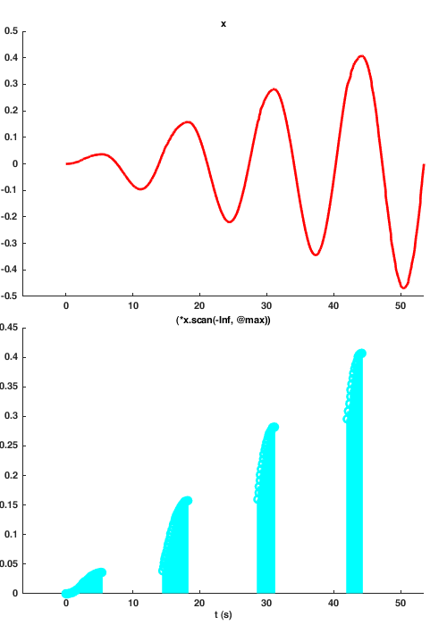
Introducing extra parameters
Some functions require any number of extra inputs. A function can be called with these extra parameters by defining them after the 'pars' name argument. All arguments after the input 'pars' are treated as extra parameters to map to the function when either the input or seed Signals update.
x = net.origin('x'); seed = net.origin('seed'); seed.post('!'); % Initialize seed with value f = @(acc,itm,p1) [itm p1 acc]; % Prepend char to array y = x.scan(f, seed, 'pars', '.'); % Pars may be signals or no h = y.output(); x.post('>')
Parameters may be Signals
Below we use the scan function to build a character array with strjoin...
x = net.origin('x'); seed = net.origin('seed'); seed.post('0'); % Initialize seed with value f = @(acc,itm,delim) strjoin({acc, itm}, delim); % Prepend char to array % f = @(acc,itm) strjoin({acc, itm}, ' + '); y = x.scan(f, seed, 'pars', ' + '); % Pars may be signals or any other data type h = y.output(); x.post('1') x.post('12') x.post('18') x.post('5') x.post('8')
When pars take new values, accumulator function is not called!
Unlike most other Signals, parameters Signals can take new values without causing the function to be called. Below we define a Signal, p, into which we can post the delimiter for the function strjoin.
x = sig.test.sequence(randi(10,1,5), 1); % Some random numbers from 1-10 p = sig.test.sequence('+-', 1, 'name', 'op'); % Some operators init = '0'; % The seed value f = @(acc,itm,delim) strjoin({acc, num2str(itm)}, delim); % Prepend char to array y = x.scan(f, init, 'pars', p); % Pars may be signals or any other data type h = y.output(); % Output to the command window sig.test.timeplot(x, p, y); % Plot values
Plot output
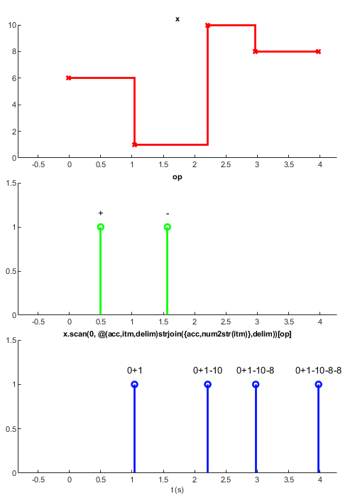
Command output
0+1 0+1-10 0+1-10-8 0+1-10-8-8
Note that y can not update until all its inputs have values (i.e. we don't see a value until p updates).
Scan can call any number of functions at the same time
Scan can call any number of functions each time one of the input Signals updates. Only the functions whose named inputs update will be called. Remember that all functions called by scan have the accumulated value as their first input argument, followed by the input Signal and any parameters following the 'pars' input.
x = net.origin('x'); y = net.origin('y'); z = net.origin('z'); seed = net.origin('seed'); seed.post(0); % Initialize seed with value f1 = @plus; % f2 = @minus; % f3 = @times; % v = scan(x, f1, y, f2, z, f3, seed); % Pars may be signals or any other data type h = v.output(); x.post(1) % 1 x.post(1) % 2 x.post(1) % 3 y.post(1) % 2 y.post(1) % 1 z.post(2) % 2 z.post(2) % 4 z.post(2) % 8
delta
x = sig.test.sequence(linspace(-1,1,50).^2, 0.1);
y = delta(x);
sig.test.timeplot(x, y, 'mode', 2);
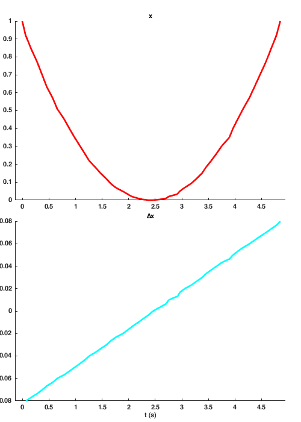
lag
lag delays a signal by a given number of samples. To delay by a given amount of time, use delay. The number of samples you delay by must be a whole number and cannot be a signal. The derived signal will only update once the input signal has updated the minimum number of times. That is, given b = a.lag(5), 'b' will get its first value after 'a' has updated five times.
In the below example we define a sine wave signal, then derive a signal that lags by a quarter of a period. Plotting these two against each other results in a circle.
f = 2; % Frequency in Hz Fs = 100; % Samples per second t = 0 : 1/Fs : 2/f; % 2 periods x = sin(2*pi*f*t); % A sine wave x = sig.test.sequence(x, .1); % Update every 100ms % Derive a signal that lags by T/4 samples y = x.lag(round(Fs/(4*f))); sig.test.timeplot(x, y, 'mode', 2, 'tWin', 10); % Plot vs time sig.test.plot(x, y, 'k-'); % Plot x vs y
buffer
The buffer method stores the last n values of its input. The signal updates when [...] the number of samples to buffer must be a whole number and can't be a signal.
x = sig.test.sequence(1:5, 1); y = x.buffer(3); h = output(y);
1 2 3
2 3 4
3 4 5
bufferUpTo
x = sig.test.sequence(1:5, 1); y = x.bufferUpTo(3); h = output(y);
1
1 2
1 2 3
2 3 4
3 4 5
to
x = sig.test.sequence(true(1,5), 1, 'delay', 1); y = sig.test.sequence(true(1,5), 1, 'delay', 1.5, 'name', 'y'); z = x.to(y); sig.test.timeplot(x, y, z, 'mode', [1 1 0])
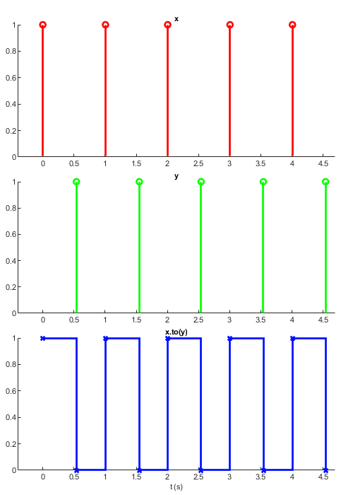
setTrigger
f = @(x) 2*x.^2 - x.^3; x = sig.test.sequence(f(linspace(-1,2,100)), 0.1); arm = skipRepeats(x < 1); z = arm.setTrigger(x > 1); sig.test.timeplot(arm, x, z, 'mode', [1 2 1], 'tWin', 10);
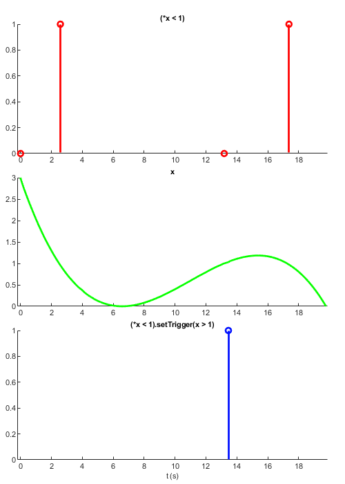
Below is a way of defining when a response is made during a trial: interTrialDelayEnd markes the end of the intertrial delay clickTimes specifies the times at which clicks should occur, based on click rate and duraion quiescentDuration chooses the length of the quiescent period for the tiral
interTrialDelay = cond(... (p.interTrialDelay(1)-p.postQuiescentDelay)>0, [p.interTrialDelay(1:2)-p.postQuiescentDelay;p.interTrialDelay(3)],... 1, p.interTrialDelay); interTrialDelayEnd = newTrial.delay(interTrialDelay.map(@(x) min(x(1) + exprnd(x(3)), x(2)))); quiescentDuration = p.preStimQuiescentRange.at(interTrialDelayEnd).map(@(x) x(1)+diff(x)*rand); quiescenceWatchEnd = sig.quiescenceWatch(quiescentDuration, t, wheelPosition, p.preStimQuiescentThreshold); stimPeriodStart = quiescenceWatchEnd.delay(p.postQuiescentDelay); closedLoopStart = stimPeriodStart.delay(p.openLoopDuration); wheelOrigin = wheelPosition.at(closedLoopStart); %Wheel position at closed loop start wheelMovement = p.wheelGain*(wheelPosition - wheelOrigin); %Wheel movement from origin trialTimeout = skipRepeats((t-(at(t,stimPeriodStart)) > p.responseWindow)*(p.responseWindow>0)); responseMade = closedLoopStart.setTrigger(abs(wheelMovement)>=60 | trialTimeout);
sig.quiescenceWatch
The function sig.quiescenceWatch is much like setTrigger, but both the value and the update time are criteria.
Fs = 2000; t = 0:1/Fs:0.5; t = t(1:100); x = sin(2*pi*400*t); % A sine wave y = sin(2*pi*375*t); % B sine wave ;) x = sig.test.sequence(x+y, 0.1); t = sig.test.sequence(t, 0.1, 'name', 'time'); arm = skipRepeats(then(x < 0, 1)); qevt = sig.quiescenceWatch(arm, t, x, 5); sig.test.timeplot(t, x, qevt, arm, 'tWin', 20, 'mode', [2 2 1 1]);
merge
The merge method takes any number of inputs and returns the value of the last updated input.
% Here we create four signals that each update in staggered fashion: x = sig.test.sequence([1 1], 1, 'delay', 1); % Update once per second after a second a = sig.test.sequence(2, 1, 'name', 'a', 'delay', 2); % Update after 2 seconds b = sig.test.sequence(3, 1, 'name', 'b', 'delay', 3); % Update after 3 seconds y = a*x^2 + b*x; z = merge(x, a, y, b); sig.test.timeplot(x, a, b, y, z, 'mode', 1, 'tWin', 3);
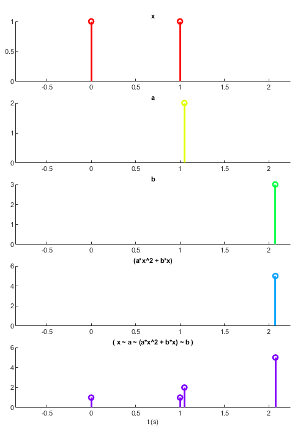
Unlike most other signals, merge signals update when any of their inputs updates, regardless of whether all their inputs have a value. The order of the inputs is significant: when two signals update simultaneously the value of the input that comes earlier in the list is selected. In the above example 'b' and 'y' update simultaneously (when 'b' updates all of the inputs to 'y' have a value, so 'y' updates). Because 'y' comes before 'b' in the merge list, 'z' takes the value of 'y' rather than 'b'.
If you want the merged signal to update only after all signals have a value, you can use the following:
% Because [a b c] requires all three inputs to have a value, it will only % start to take values when all are initialized. Then each time an input % updates, allUpdated will update to true, this then samples the current % value of the merge signal for s allUpdated = map([a b c], true); s = allUpdated.then(merge(a, b, c));
delay
The delay method produces a signal that updates a given number of seconds after its input. As with lag, the number you delay by must be a double and not a Signal object.
emitter = sig.test.sequence([-1 -1 0 3 4 4 5], 0.5);
x = emitter.skipRepeats;
y = x.delay(1);
sig.test.timeplot(x, y, 'mode', 1)
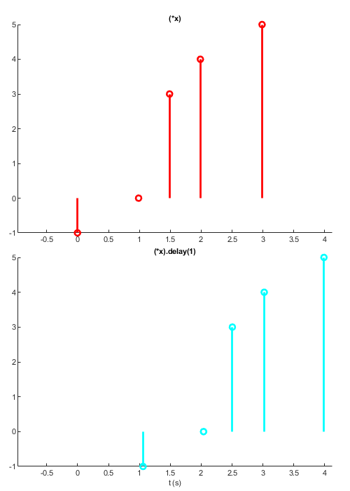
Notes
(1) If a signal already has a value and you derive a new signal from it, the new signal won't automatically compute its value. In the Signals Experiment Framework, the experiment definition function is run once to set up all Signals, before any inputs are posted into the network, so this isn't an issue.
(2) You can get the number of nodes in the network by calling networkInfo on the net id:
networkInfo(a.Node.Net.Id)
Net 0 with 9/4000 active nodes
(3) As you may have noticed from the node graphs, when you evaluate an expression involving a signal, any numbers are made into Signal objects. These are nodes that only ever have one value (known as 'root' nodes). There are often more nodes in a network than you might expect, for example the following line indicates that there are at least 4 nodes in the network:
x = mod(floor(x), 1*2)
These would be x, 2 (a root node), floor(x) and mod(floor(x), 2).
(4) When a function is called on an object, MATLAB checks whether that object's class has a method of the same name (a 'method' is a function that is part of an object's class). If the class has that method associated with it, this method is called instead of the usual function. This is known as 'overloading' and is how we can do things like adding and subtracting Signals. For more info, see the MATLAB documentation here.
(5) This is known as 'syntactic sugar', and a list of MATLAB's operators and the functions they correspond to can be found here.
Summary
Here are the most important things to remember when writing an experiment:
- Signals represent values that change can over time.
- Evaluating any expression that includes a signal will result in a new signal being returned, e.g. is 'a' is a signal, 'a * 2' produces a new signal.
- In general a signal can only update when all of its inputs have a value.
- Clearing or reassigning a variable is different to deleting or modifying a signal.
- Signals can have any value type: if one of your signals changes data type, make sure all dependent signals can work with those types.
Next section: expDef Inputs.
Bonus plot 1
t = 1.5 : 0.01 : 14.2;
t = sig.test.sequence(t, 0.2);
x = t - 1.6 * cos(24*t);
y = t - 1.6 * sin(25*t);
sig.test.plot(x, y, 'Color', [0 0.4470 0.7410]);

Butterfly curve (transcendental plane curve)
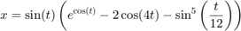
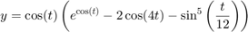
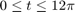
t = sig.test.sequence(0:0.1:12*pi, 0.2); f = exp(cos(t)) - 2 * cos(4*t) - sin(t/12)^5; x = sin(t) * f; y = cos(t) * f; sig.test.plot(x,y); xlim = [-5 5]; ylim = [-5 5];
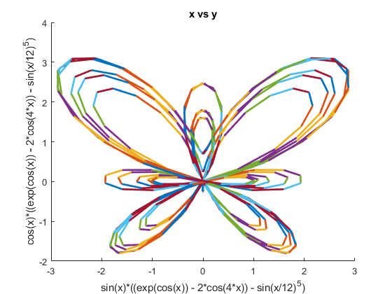
Etc.
Author: Miles Wells
v0.0.2
%#ok<*NASGU,*NOPTS,*ST2NM>